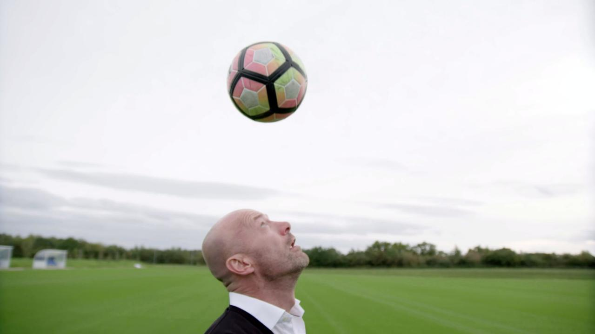

He's always been an expert on the football pitch, but now his talents have been recognised in a very different field.
On Friday, Alan Shearer became Dr Shearer, as he was handed an honorary university doctorate.
The NUFC hero accepted the honour at The University of Stirling, Scotland, at a graduation ceremony alongside 1,400 students.
Ex-England and Newcastle United striker Shearer was recognised for his outstanding contribution to football and dementia awareness, having fronted a documentary in 2017 investigating the risks posed by heading in the sport.
In the BBC programme, he met former footballers and their families who live with dementia, spoke to scientists and doctors about the research that is taking place, and took part in tests himself.
During the "hugely emotional" filming process, he faced up to the fact that having practiced headers as much as 100 times a day during training, and made expert use of the move during his playing career, he too could have been put at risk.
After receiving the accolade from university principal and vice-chancellor Professor Gerry McCormac, Shearer paid tribute to the efforts of those who've researched dementia and its links to football.
He said: "I am deeply honoured to receive this prestigious recognition from the University of Stirling - and accept it on behalf of the team I worked with on the recent work exploring the risks posed by heading footballs.
"I am passionate about this vitally important area of research and delighted to see Stirling leading the way in attempting to address the concerns of the football community.
"I would like to congratulate all of those graduating from the University of Stirling today - it is great to see their hard work and dedication rewarded and I have enjoyed celebrating alongside them.
"I wish them all the best as they move on to the next chapter of their lives."